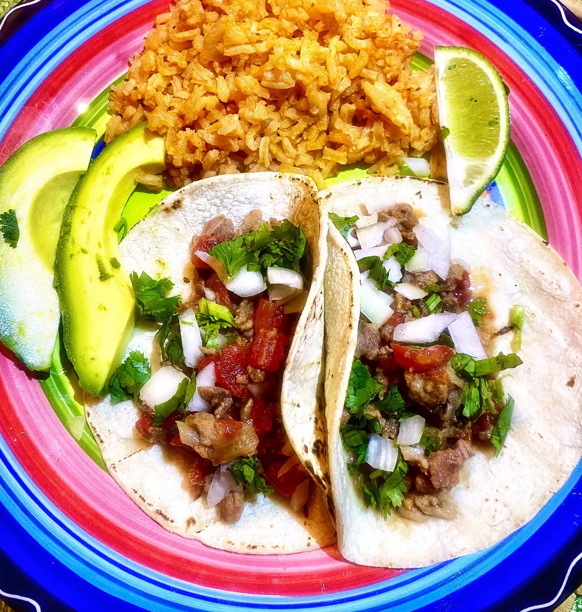

Carne Picada Tacos

What is Carne Picada Tacos??
Carne picada is a cross between carne asada and ground beef.
These tacos are simple and easy.
I top mine with cilantro, onions, a squeeze of fresh lime and salsa.
Ingridient List
- 8 (7 inch) corn tortillas, warmed
- 2 cups prepared carne picada
- 1/2 cup chopped onion
Taco Directions
- Heat tortialls directly on a gas grill or in the microwave.
- Place 2 tablesppons carne picada on each tortilla.
- Top with onions, cilantro, and salsa.